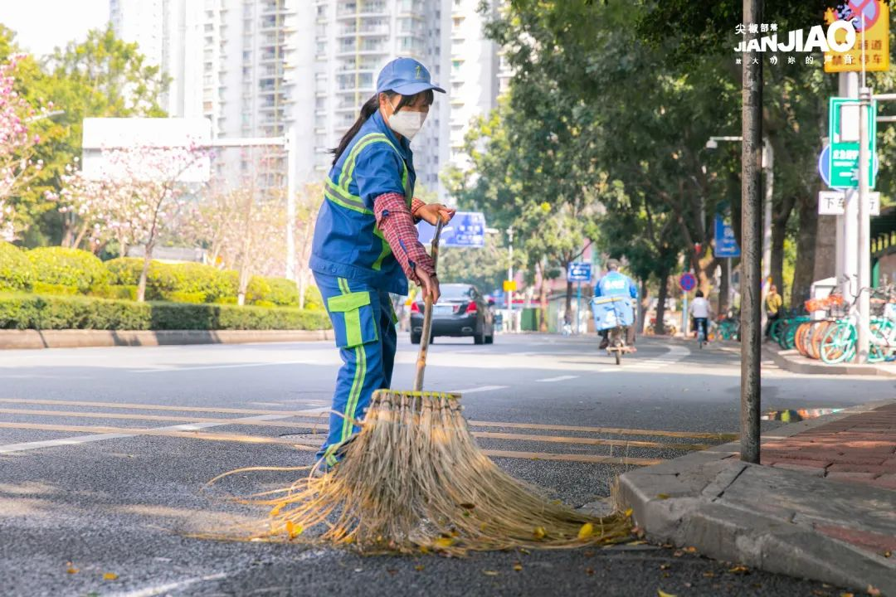
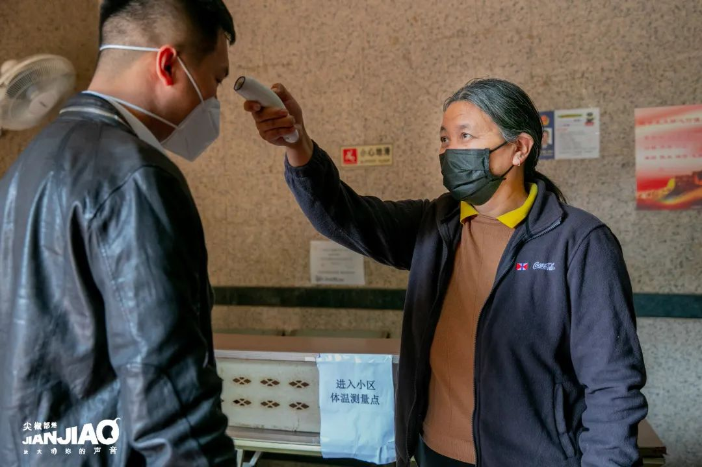
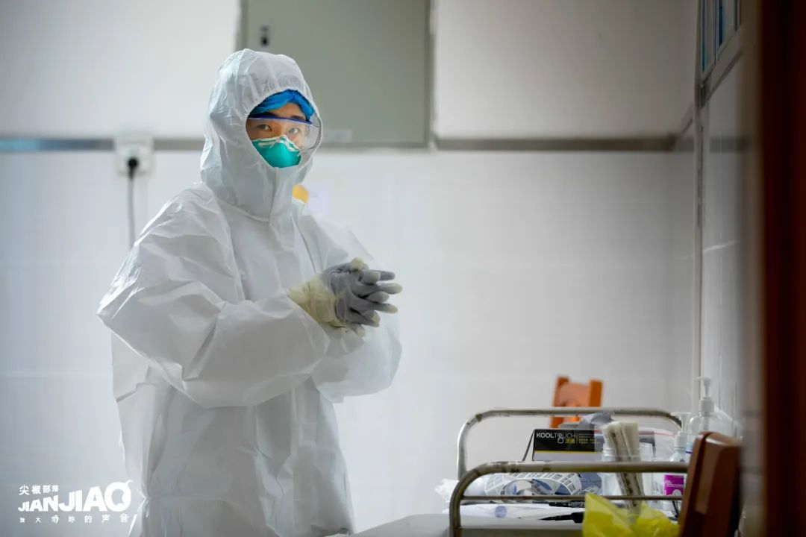

乡村厨师：“赚钱再重要，也不能拿生命开玩笑”
原文链接 备份链接 “ - 疫 情 之 下 - 父亲作为一家之主，把家里卖粮食的一万多块钱当做货款结给了供应商，按照他交代给我们的原话：“咱们已经吃亏了，就不要再让别人吃亏了，也让人家回家好好过个年。” ” …
摘要：一句“我不怕”的背后，可以有千百个理由。
新冠肺炎的阴影尚未散去，不少地区已经陆续复工。人们正在努力重建自己的工作和生活，同时，也有一部分人从未离开，始终坚守在岗位上。
疫情之下，劳动者们面临怎样的挑战，又如何应对？什么是她们最大的担忧和牵挂？我们将镜头对准不同行业的女性劳动者，希望聚焦于她们的面容和声音。
“都没什么的。”

何姨今年过年没有回家，不是因为疫情，而是因为工作。按规定，她每年有5天年假，但公司总是早早就催员工把假休完，到了过年，就不让休假。何姨对此的理解是，“休了就没人扫马路，没人搞卫生啦”。
疫情的到来反而让她的工作稍显轻松，平时每周只有一天休息日，现在出于安全方面的考虑，员工一周可以休两天。除此之外，这件事对她的生活影响有限。环卫工的工作量很大，每天早上5点半，天还没亮，她就要出门，上班期间要保持自己负责的区域卫生，就意味着要几乎一刻不停地走来走去。何姨说，她忙得连新闻都没时间看，也不知道疫情扩散有多严重、出现了多少病例。
现在每天上班，班长都会来发口罩、量体温，体温记录要上报给公司。这些例行措施并没有让何姨更担心自己的处境——出来工作挣钱，怕不怕都是要干的，每天干活权当锻炼身体了。因为还能上班，家庭的经济状况也没有受到影响，“挺好的”。
工作间隙，她谈起老家上大学的女儿，说不知道她现在读书怎么样，成绩好不好。大学学费很高，是一笔不小的开支。
“再怎么保护好，要传染也传染上了。”

作为外卖送餐“骑手”，对于疫情给人们生活造成的影响，晓红和她的同事感受非常深刻。
晓红回忆，年前开始，就有很多人在网上买口罩，她每天不停地送口罩，心里还觉得很奇怪。当时公司上下都没有意识到情况严重，“根本没有想到会有那么吓人的病”，骑手自己都没戴口罩，照旧送货上门。等她意识到要买口罩的时候，到处都已经卖完了。大年初一，公司召开紧急会议，这才给所有人配备了口罩和消毒水。
到了初二，晓红开始感觉害怕。她去超市拿货，碰到了抢购粮食的“恐怖”场面。原本过年期间工作量应该不大，但那几天抢货把她累得够呛。很快，小区和城中村开始限制人员进出，她的主要工作也从送餐变成了送菜送粮。
最开始进村要出示身份证，凡是湖北的一律不给进。晓红替湖北的同事抱不平：很多人几年都没回过家了，也被“一杆子打死”。还有的村规定“人可以进，车不能进”，晓红觉得好笑：“是人传播病毒，又不是车子传播病毒。”村子很大，她靠双腿徒步送了几天，封村的规定又下来了，外卖从此只能送到村口，等客户自己出来取。
忙乱之余，送餐员有时在一起开玩笑，有人说自己还是怕死的，别人在车里装一瓶消毒水，他装了两瓶。但另一方面，他们也是最“不怕死”的。晓红担心归担心，心底却有一股近乎“听天命”的豁达，“天天在外面跑，再怎么保护好，要传染也传染上了”。她让家人不要来广州看她，但自己没想过要回老家，毕竟回去还要隔离，不如留下来工作。家里的亲戚很羡慕她，她们连续一两个月没有班上，而她至少还有收入。
“肯定会有点影响。”

往年年初八就恢复营业的菜市场，今年才刚开始复苏。刘姐从老家回到广州，在家“自我隔离”了半个月，如今安顿好上网课的孩子，自己出来做生意。
在物资储备方面，刘姐家算是比较“幸运”。家里有地，有鱼塘，还养了鸡，即使疫情期间买不到菜，也不愁没有过年的口粮。她年三十那天看朋友圈，才知道广州的超市已经被抢购一空。酒精和消毒水在家里也能买到，唯一的麻烦是口罩，药店都卖完了，最后是托了别人，才拿到10个。5块钱一个的价格，如今看来也不算高。
回到城里，刘姐觉得赋闲在家的生活有点无聊。不能做生意，不能出门打牌，不能聚餐，只能在家里整天看电视、睡觉。经济状况多少也受到影响，不能挣钱，花钱的地方却一样没少。“你坐在家里也要吃饭，也要交房租是不是？”疫情尚未结束，但人们都要生活，要吃饭，要买菜。刘姐家的店铺又开张了。
“肯定有压力的啦。”

吴姨是广州本地人，2月5号开始，她作为业主参与到自己所在城中村的执勤工作，在村口给居民做出入信息登记，操着不太熟练的普通话应对来来往往的人。对于这份志愿工作，她说得言简意赅：“都轮不到你害不害怕。这么多外地人回来，（我们就）来值班咯。”
据吴姨说，疫情期间出去找不到工作，家里的房子又不允许出租，即使是本地人，也要面临一定的经济压力。
“你在家里待久了，真的很想上班吗？”

拍摄进行到一半，阿丽突然说：“我帮你消个毒先。”拿出酒精对着摄影师喷了一通。
像许多独居的年轻人一样，她在复工之前过了一段每天穿着睡衣在家里吃泡面的日子。阿丽庆幸自己过年前多买了两套睡衣，立刻就派上了用场。身边有人早早屯了大量口罩，对疫情扩散充满紧张的阿丽反而没有屯，因为觉得这是一种“很羞耻的行为”：“你屯我屯，大家都买不到了，没得用的人怎么办？”她只买了够自己一个人用的量。
拍摄当天只有一个客人上门，气氛十分悠闲。阿丽诚实地表示，自己压根不想上班，在家躺了一个月，出来无非是想走走、散散心，再就是得有钱进账——在疫情造成的所有影响中，“没钱”这点才最为重要。
“你看到，我没有休息一天。”

李姨过年没有回家，和往年没有什么不同。她的工作常年无休，请假就要扣钱。其实原本每月应该有4天休假，但门卫一个月工资只有2100，如果休息日加班，一天能补70块钱，为了这每个月的280元，李姨都尽量坚持不休息。
她和老公两人都是门卫，到了晚上，老公会来接她的班。两人微薄的工资，要供养身体不好的一儿一女。女儿今年还在读高三，不仅要交学费，一周的药费也要一千多。医生说药需要连吃3个月，李姨希望这3个月能让女儿痊愈：“（病）能断根就好了，没有断根（以后）医不起啊。”
家里的钱都用来填窟窿了，没有什么积蓄，如今李姨和老公住着一个很小的单间，一个月房租700。她有点心疼地算了笔账：刚住了两个月，算上押金，一共就交了两千多，还要交卫生费、水电费，再加上日常生活和老家的开支……
女儿现在也在这里暂住。李姨没买智能手机，上不了网，“病毒”相关的资讯都是女儿告诉她的。单位没有给员工发口罩，让他们自己买，说等疫情过去再报销，也多亏女儿早早买好了备在家里。刚开始李姨不觉得情况严重，说戴口罩不舒服，不想戴，女儿让她忍一忍，一定要戴上：“命是最重要呀！”
“我不怕。”

阿幸在一家社区卫生服务中心负责传染病防控相关工作。疫情扩散后，社区中心的医务人员积极加入疫情防控工作中，早出晚归，有时安排24小时值班，甚至30多小时超负荷工作。阿幸就是其中一员，每天要一户户上门，给湖北回来的居民做健康随访。
基层医务人员紧缺，防护物资不足，作为一线防控人员生命安全得不到基本保障，但是大家都认为在灾难面前有义务出一份力，也可以说是职业本身的牵绊，认为守护居民的健康是职责所在，因此几乎没有怨言。
她说，自己已经“做到麻木”，对时间都失去了概念。在连做了6天的随访工作后，由于工作强度引起的机体疲惫，她开始出现肌肉酸痛、胸闷、头痛等症状，担心自己会成为“无症状感染者”，在工作中传染给别人。她给自己安排了检查，等待结果的时候，在家里睡了整整两天——身体在发出警报，提醒她需要休息。
可阿幸说不累，还想着参与社区志愿服务，继续工作下去。体检结果出来了，没有感染，她又立刻回到了岗位上。
站在对抗疫情的第一线，每天要接触大量的人，同时不断听到医护人员感染的新闻报道，内心是否有过动摇和害怕？阿幸说她不怕，多年的工作经验让她心里有底，对她来说，最重要的是如何安抚居民的恐慌，更迅速地开展工作。
“我不怕。这次疫情已经夺走很多人，包括我们医务人员的宝贵生命，我怕的是再不努力采取行动把疫情控制下来，下一个生命受到威胁的，可能会是身边最重要的人。”
“知道怕死的话都不干这个活了。”

最早得知疫情的时候，黄姨干活还是不戴口罩。小区里的居民路过看见，有人问：“阿姨你不戴口罩啊？”黄姨说没事，自己不怕死，“知道怕死的话都不干这个活了”。
不过随着形势慢慢严峻，最后她还是戴上了。口罩物业没发——名义上，黄姨和她老公算是“承包”的这份清扫工作，因此除了每月5000的报酬，口罩、手套这些劳保用品，包括垃圾袋、消毒水、洗洁精，基本都需要他们自己购买。黄姨用的口罩是以前别人搬家丢掉的，她“捡”了出来，一包包还是新的，现在派上了用场。刚开始她不舍得用，一个口罩戴两三天，现在家里还剩一二十个。
特殊时期，清扫垃圾的活在别人看来可能很危险，但黄姨的心态并没有什么改变。她的仔细有目共睹，居委会来检查，都夸她打扫得干净。黄姨觉得这是理所当然的事情：“既然要干，就要弄干净，嫌脏肯定就不干了。”
这次拍摄和访谈都是用街访的形式完成的，过程中非常紧张，怕每一次来之不易的机会被突然中断，每一次都争分夺秒。被拒绝了很多次，但还是想抓住每一个可能，多试一试。
过程中听到最感人的一句话是：“申请未能批准，但是谢谢你为我们女性发声。”感到一切都是值得的。真心地谢谢每一位愿意接受采访和拍摄的朋友。
看见劳动者平凡生活中的闪光之处。
请尊重原创，保护版权
本文为尖椒部落原创作品。欢迎转载，但请保留本段文字：转载自中国女工权益与生活资讯平台——尖椒部落（jianjiaobuluo.com）。并保留以下作者信息：

原文链接 备份链接 “ - 疫 情 之 下 - 父亲作为一家之主，把家里卖粮食的一万多块钱当做货款结给了供应商，按照他交代给我们的原话：“咱们已经吃亏了，就不要再让别人吃亏了，也让人家回家好好过个年。” ” …
原文链接 备份链接 “封闭与流动：疫情下的中国家政工”的第一篇投稿选登来自梦雨。知道梦雨早早从北京回老家，准备做手术；也知道她和农村生活关系一直是纠结的。看到稿子的名字，《写给我即将见面的姐妹们》，有点惊喜。我想起这位“来自家政工内部的 …
原文链接 备份链接 摄影：彭晓葵 口述：小孙 记者：殷宴 “ “我们现在尽量在寻找一个平衡点，既要阻断病毒传播，又不能影响居民正常生活” ” 新冠肺炎疫情爆发近一个月以来，从湖北到全国各地均处于应急响应状态。千家万户闭门不出的同时，基层公 …
原文链接 备份链接 摄影：彭晓葵 口述｜小孙 记者｜殷宴 新冠肺炎疫情爆发近一个月以来，从湖北到全国各地均处于应急响应状态。千家万户闭门不出的同时，基层公务员们在乡镇间奔走，克服管制带来的种种困难，把防疫工作落实到每一村、每一户，一 …
原文链接 备份链接 这一周，有超过500位读者同我们分享了自己关于爱的故事。今天，我们选取了其中的一些故事，以配合这个名为「情人」的节日——今时今日，这一天似乎看起来不合时宜，但正是因为今时今日，我们才该庆幸，还好，我们还有爱情。 策 …